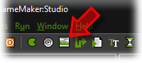
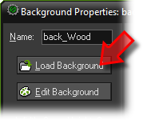
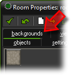
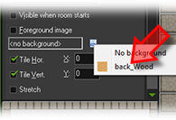

Tutorial
Page 8 of 15
Adding A Background
Assuming your game did work as expected, we are now going to make it look a bit fancier.
First we will add a wooden background image. Click on the
Resources menu and press Create Background
or click on the button with the image:

In the form that appears, give the background an appropriate name and press the Load Background
button.

In the file selector that appears go to the same folder as previously mentioned for the sprites (Your Project then Assets) and in there find the image marked wood.gif and double click on it.
Press OK to close the form. The background should now be visible in the list at the left. The next
step is to make the background visible in the room we already created. To reopen the form for the room, double
click on it in the list at the left. (Don't add a new room!). In the form, click on the tab backgrounds
to open that page.

In the middle click on the menu icon, next to where it says <no background> and select the wooden background.
The background should now be visible in the room at the right.

(Note that there are many options you can set about backgrounds in rooms but we don't need them here.
You can find more information about this in the help file.) Press the green check-mark at the top left
to close the room form. Now better save the game and run it to see whether the background is shown
correctly.